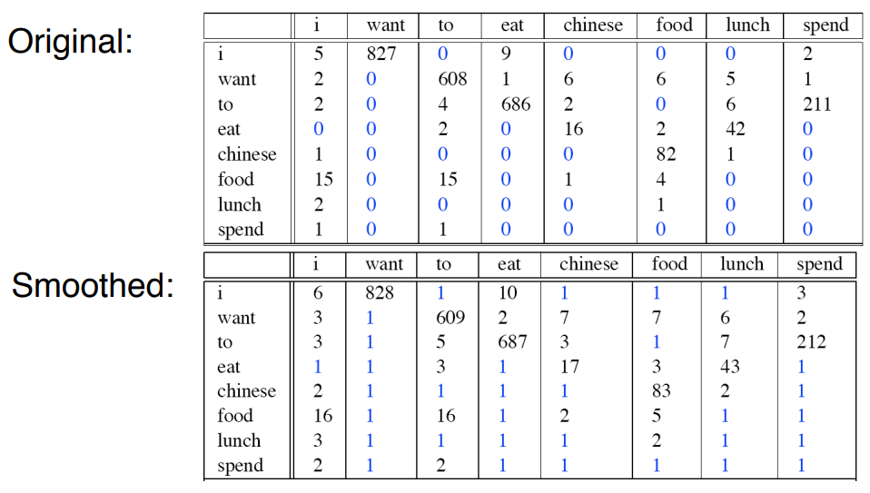
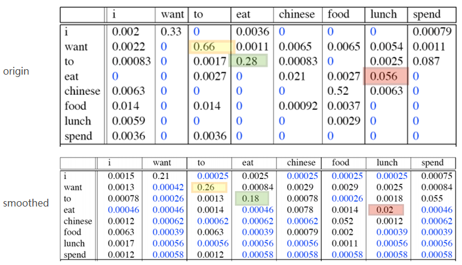

概述
符号定义
$L$ : 语言, 如 汉语, 英语, 或者一门专门的语言.
$T$ : 从语言$L$ 中随机抽样的样本.
$s$ : 语言中的一个句子.
语言模型(language model)
根据语言样本估计出的句子的概率分布$P(s)$称为语言$𝐿$的语言模型. 语言模型给句子赋以概率，语言$L$中所有句子的概率之和为1.
$$
\sum_{s \in L} P(s) = 1
$$
语言模型应用举例
- 语音识别
- I have too many books. ( √ )
- I have to many books. (×)
- I have two many books. (×)
- 汉语分词
- 别 把 手 伸 进 别人 的 口袋 里 ( √ )
- 别 把手 伸 进 别人 的 口袋 里 (×)
- 机器翻译
我喜欢吃苹果 ⇒
I like eating apple ( √ )
I eating like apple (×)
语言建模
给定自然语言$L$，$p(𝑠)$未知, 利用给定的语言样本估计$p(𝑠)$的过程被称作语言建模.
给定句子$𝑠 = w_1 w_2 \dots w_𝑙$ ，如何计算该句子的概率: $p(𝑠)$
直接统计语料库中句子$𝑠$出现的次数.
应用链式规则，分解计算$p(𝑠)$
$$
\begin {aligned}
p(𝑠) &= p (w_1)p (w_2|w_1)p (w_3 | w_1w_2) \dots p (w_l | w_1w_2… w_{l−1}) \\
\\
&=\prod_{i=1} p(w_i|w_1w_2… w_{i−1})
\end {aligned}
$$
举例如下：
$$
\begin {aligned}
&p(john read a book) \\
& = p(john)\times p(read john) \times p(a john read)\times p(book|john read a)
\end{aligned}
$$
事实上不能用这种方式计算一个句子的概率，原因有两个：
- 直接这样计算会导致参数空间过大. 一个语言模型的参数就是所有的这些条件概率.
比如，按上面方式计算$P(w_5 |w_1 ,w_2 ,w_3 ,w_4 )$，这里每个$w_i$可能的取值有$|V|$个, 即一个词典大小. 则该模型的参数个数是$|V|^5$，而且这还不包含$P(w4 | w1, w2, w3)$的个数，可以看到这样去计算一个句子的概率会使语言模型参数个数过多而无法实用. - 数据稀疏严重. 存在大量可能的字符串是在语料库中未出现过的.
n元模型
定义
为了解决參数空间过大的问题. 引入了马尔科夫假设：随意一个词出现的概率只与它前面出现的有限的一个或者几个词有关.
$w_i$ 的出现只与其之前的$n−1$个词有关，即n元组(n-gram).
$$
p(w_i|w_1w_2… w_{i−1}) = p(w_i|w_{i-n+1}w_{i-n+2}… w_{i−1})
$$
此时：
$$
\begin {aligned}
p(𝑠) &= p (w_1)p (w_2|w_1)p (w_3 | w_1w_2) \dots p (w_l | w_{i-n+1}w_{i-n+2}\dots w_{l−1}) \\
\\
&=\prod_{i=1} p(w_i|w_{i-n+1}w_{i-n+2}\dots w_{i−1})
\end {aligned}
$$
根据$n$ 的不同取值可分为:
- 一元模型(n=1, unigram)
- 二元模型(n=2, bigram)
- 三元模型(n=3, trigram)
n元模型的参数
| 参数形式 | 参数数量 | |
|---|---|---|
| unigram | $p(w_i)$ | $\mid V\mid$ |
| bigram | $p(w_i\mid w_{i-1})$ | $\mid V\mid^2$ |
| trigram | $p(w_i\mid w_{i-2}w_{i-1})$ | $\mid V\mid^3$ |
| n-gram | $p(w_i\mid w_{i-n+1} \dots w_{i-1})$ | $\mid V\mid^n$ |
$w \in V$, $V$只词表，|V|代表词表中词的数量
可以发现：
- n越大，模型需要的参数越多
- 参数数量指数增长
小结：
n元模型认为：句子中前面出现的词对后面可能出现的词有很强的预示作用.
$n$越大，历史信息越多，模型越准确.
n的选择
| n 较大时 | n 较小时 | |
|---|---|---|
| 语境区别性 | 提供了更多的语境信息，语境更具区别性 | 境信息少，不具区别性 |
| 参数 | 参数个数多、计算代价大 | 参数个数少、计算代价小 |
| 训练语料 | 需要更多的训练语料 | 训练语料无需太多 |
| 结果 | 参数估计不可靠 | 参数估计可靠 |
n元模型构建过程
- 数据准备:
- 确定训练语料
- 对语料进行词例化(tokenization) 或切分
- 句子边界标记，增加两个特殊的词
和
I eat . →I eat .
I sleep . →I sleep .
- 参数估计
利用训练语料，估计模型参数 - 模型评价
参数估计
如何计算其中的每一项条件概率(即参数)呢? 极大似然估计（Maximum Likelihood Estimation，MLE）
假设语料库中句子和句子互相独立, 是从服从分布为$p(\Theta) $的总体随机抽取的. $\Theta$ 为模型参数, 即上面的条件概率.
一个句子的概率为: $p(s \mid \Theta) $ .
整个语料库的概率(似然函数):
$$
p(T \mid \theta) = \prod_{s_i \in T} p(s \mid \Theta)
$$
使训练样本似然值(概率)最大的参数$\Theta$ 为
$$
\Theta_{ML} = \arg\max p(T \mid \Theta)
$$
该优化问题具有解析解, 其解表示如下:
令 $c(w_1w_2… w_n)$表示$n$元组 $w_1,w_2… w_n$ 在训练语料中出现的次数. 则：
$$
p(w_n \mid w_1… w_{n−1})=\frac{c(w_1w_2 \dots w_n)}{c(w_1w_2 \dots w_{n−1})}
$$
该方法称为相对频率法(relative frequency estimation).
如对于如下训练语料：1
2
3<bos> John read Moby Dick <eos>
<bos> Mary read a different book <eos>
<bos> She read a book by Cher <eos>
使用相对频率发计算模型参数如下：
$$
\begin {aligned}
& p( john \mid bos) =\frac {c( bos, john)}{c( bos )}= \frac 13 \\
& p (a \mid read) =\frac {c(read, a)}{c(read)}=\frac 23 \\
& p( eos \mid book) =\frac {c (book, eos)}{c (book)}=\frac 12 \\
& p( book \mid a) =\frac {c(a, book)}{c(a)}=\frac 12 \\
& p( read \mid john) =\frac {c(john, read)}{c (john)}=\frac 11
\end {aligned}
$$
note : 取对数避免下溢
模型评价
语言模型常用的评价指标有两个, 交叉熵(Cross-Entropy)和困惑度(Perplexity)).
Cross-Entropy
语言$L = (X_i) \sim p(x)$ 与其模型q的交叉熵定义为:
$$
H(L, q) = - \lim \frac 1n \sum_{x_1^n}p(x_1^n) \log q(x_1^n)
$$
其中：$x_1^n = x_1, \dots, x_n$ 为语言$L$ 中的句子， $p(x_1^n)$ 为句子$x_1^n$ 在语言$L$中出现的概率(真实)概率，$q(x_1^n)$ 为模型$q$ 对句子 $x_1^n$ 出的概率估计.
现在仍然无法计算这个语言的交叉熵，因为我们并不知道真实概率$p(x_1^n)$，不过可以假设这种语言是理想的，即$n$趋于无穷大时，其全部 word 的概率之和为1. 也就是说，根据信息论的定理：假定语言$L$ 是稳态(stationary)遍历的(ergodic)随机过程，$L$ 与其模型$q$的交叉熵计算公式就变为:
$$
H(L, q) = - \lim \frac 1n \log q(x_1^n)
$$
一般地，在$n$足够大时我们近似地采用如下计算方法：
$$
H(L, q) \approx - \frac 1n \log q(x_1^n)
$$
在测试语料上推导如下:
令$T=w_1 w_2 \dots w_N$为测试语料, 此处假设$N$ 是测试语料的文本长度, 是一个足够大的值. 此时模型$q$ 在测试语料上的交叉熵定义为:
$$
H(T, q) = - \frac 1N \log q(T)
$$
对于n-gram模型来说
$$
\begin {align}
& q(T) = \prod_{w_1^n \in V^n} q(w_n \mid w_{1}^{n-1}) \\
& p(w_1^n)= \frac {c(w_1^n)}{N}
\end {align}
$$
则其交叉熵定义为:
$$
\begin {align}
H_{\mathrm{n-gram}}(T, q) &= - \frac 1N \log q(T) \
&= - \frac 1N \log \prod_{w_1^n \in V^n} q(w_n \mid w_{1}^{n-1}) \\
&= - \frac 1N \sum_{w_1^n \in V^n} \log q(w_n \mid w_{1}^{n-1}) \\
&= - \sum_{w_1^n \in V^n} \frac 1N \log q(w_n \mid w_{1}^{n-1}) \\
&= - \sum_{w_1^n \in V^n} p(w_1^n) \log q(w_n \mid w_{1}^{n-1}) \\
\end {align}
$$
交叉熵越小, 语言模型质量越好.
例如unigram:
$$
\left .
\begin {align}
q(T) = \prod_{i=1}^{N} q(w_i) \\
p(w_i)= \frac {c(w_i)}{N}
\end {align}
\right \}
\Rightarrow H_1(T, q) = - \sum_{i=1}^{N} p(w_i) \log q(w_i)
$$
推导过程如下:
$$
H_1(T, q) = - \frac 1N \log q(T) = - \frac 1N \log \prod_{i=1}^{N} q(w_i) = - \sum_{i=1}^{N} \frac 1N \log q(w_i) = - \sum_{i=1}^{N} p(w_i) \log q(w_i)
$$
Perplexity
给定语言$L$ 的样本$T=w_1 w_2 \dots w_N$, 语言 $L$ 的困惑度定义为:
$$
\begin {align}
PP_q &= 2^{H(L, q)} \approx 2^{- \frac 1N \log q(x_1^N)} \\
&=q(T) ^{-\frac 1N}
\end {align}
$$
对于n-gram模型来说: $q(T) = \prod_{w_1^n \in V^n} q(w_n \mid w_{1}^{n-1})$
$$
PP_q = \{\prod_{w_1^n \in V^n} q(w_n \mid w_{1}^{n-1}) \} ^{-\frac 1N}
$$
- 困惑度越小, 语言模型质量越好.
- 从以上推导可以看出 交叉熵 和 困惑度 本质是一致的.
- 在设计语言模型时，我们通常用困惑度来代替交叉熵衡量语言模型的好坏.
比如你对模型进行了一版改进:
使用交叉熵评价时, 交叉熵减小了 9.9 - 9.1 =0.8
使用困惑度评价时, 困惑度减小了 950 - 540 = 410
给老板汇报时你会选用哪个? 反正主流的论文都是用的困惑度作为评价指标.
数据稀疏问题
由于训练样本不足而导致所估计的分布不可靠的问题，称为数据稀疏问题
举例如下: 有如下训练语料：
1 | <bos> John read Moby Dick <eos> |
对于一个新的句子Cher read a book. 由于c(Cher read) = 0. 所以$p(Cher read a book)=0$ 这个结论是不合理的. 问题出在现有语料没有覆盖所有情况.
NLP数据稀疏问题汇总如下:
- zipf定律: 在自然语言的语料库里，一个单词出现的次数与它在频率表里的排名成反比.
- 语言中只有很少的常用词, 大部分词都是低频词, 大多数词( n元组)在语料中的出现是稀疏的.
- 词的分布是长尾分布，n元组分布亦是如此.
- 语料库可以提供少量常用词( n元组)的可靠样本.
- 语料库无论怎么扩大, 总是会出现未覆盖的词或( n元组).
- 语料库规模扩大，主要是高频词词例的增加, 扩大语料规模不能从根本上解决稀疏问题.
由于数据稀疏，MLE估计值不是理想的参数估计值
平滑技术
解决数据稀疏问题的方法为平滑技术(smoothing), 它的基本思想为: 把在训练样本中出现过的事件(句子)的概率适当减小, 把减小得到的概率值分配给训练语料中没有出现过的事件(句子).
根据概率的重新分配方法的不同, 平滑技术分为不同的方法.
简单平滑
简单平滑 认为未出现的n元组是等概率分布
这些方法包括 加法平滑、留存平滑、Good-Turing平滑
加法平滑
Add-one
Add-one平滑规定n元组比真实出现次数多一次.
$$
\begin {aligned}
& new_count(n-gram) = count(n-gram) +1 \\
\\
& p_{ML}(w_n \mid w_1… w_{n−1})=\frac{c(w_1w_2 \dots w_n)}{c(w_1w_2 \dots w_{n−1})} \\
\\
& p_{+1}(w_n \mid w_1… w_{n−1})=\frac{c(w_1w_2 \dots w_n)+1}{c(w_1w_2 \dots w_{n−1})+ \mid V\mid} \\
\end {aligned}
$$
$ \mid V\mid$ 为语料库中词的数量.
此时:
- 没有出现的n元组的频率是1, 具有一个较小的概率.
- 出现过的n元组的频率+1, 但是其概率减小了.
下面举例说明Add-one平滑存在的问题.
bi-gram平滑前后二元组的频率计数

bi-gram平滑前后二元组的概率统计:

- 由于训练语料中未出现n元组数量太多, 平滑后, 所有未出现的n元组占据了整个概率分布中的一个很大的比例(所有蓝色概率的和). 因此, 在NLP中, Add-one给训练语料中没有出现过的n元组分配了太多的概率空间. 同时大幅减小了出现过的n元组的概率. 这样做显然是不合理的.
- add-one 将出现在训练语料中的那些n元组, 都增加同样的频度值, 这是否公平? 不合理
- add-one 认为所有未出现的n元组概率相等, 这是否合理? 不合理
优点: Very simple to implement
缺点: Takes away too much probability mass from seen events. Assigns too much total probability mass to unseen events. 实际实验中发现未出现的n-gram占的概率和==99.96% .
Add-K
在Add-one的基础上做了一点小改动, 原本是加一, 现在加上一个小于1的常数$K$.
$$
p_{+K}(w_n \mid w_1… w_{n−1})=\frac{c(w_1w_2 \dots w_n)+K}{c(w_1w_2 \dots w_{n−1})+ K\mid V\mid}
$$
- Add-K 效果比Add-one好, 仍不理想.
- 缺点是这个常数K仍然需要人工确定, 对于不同的语料库$K$可能不同.
简单平滑方法还有 留存平滑, Good-Turing平滑 等.
组合平滑(插值和回退)
简单平滑认为未出现的n元组等概率分布. 组合平滑.
那么未出现的n元组概率均匀分布，是否合理？其实是不合理的.
例如，假设下面三个bigram均未在训练预料中出现
journal of
journal from
journal never
但是根据经验 journal of 应该更常见，概率应该更大.
同时我们发现越是高阶n元组, 稀疏问题越严重.
组合平滑的思想就是参考低阶n元组估算高阶n元组的概率分布. 比如: 通过统计发现unigram 中
- “of” 频率高于“from” 和 “never”
- 概率p (of) >p (from) >p(never)
所以 journal of 的概率大与另外两个.
组合平滑分为 插值和回退 两类.
插值平滑
简单线性插值平滑
它的核心思想是，既然高阶组合可能出现次数为0，那稍微低阶一点的组合总有不为0的. 如下是一个三阶组合，假设$p(w_n|w_{n−1}w_{n−2})=0$，而$p(w_n|w_{n−1})>0$且$p(w_n)>0$，则加权平均后的概率不为$0$，从而达到平滑的效果.
$$
\hat p(w_n|w_{n−1}w_{n−2})=\lambda_3 p(w_n|w_{n−1}w_{n−2})+\lambda_2 p(w_n|w_{n−1})+\lambda_1 p(w_n)
$$
其中: $\sum_i\lambda_i = 1$ , $\lambda_i$ 根据经验取值, 也可以基于开发集自动学习
简单线性插值平滑可以表示为如下递归式:
$$
p_{interp} (w_i \mid w_{i-n+1}^{i-1}) = \lambda_i p_{MLE} (w_i \mid w_{i-n+1}^{i-1}) + (1- \lambda_i) p_{interp}(w_i \mid w_{i-n+2}^{i-1})
$$
Jelinek-Mercer平滑
简单线形插值平滑中，权值 $\lambda_i$ 一旦确定就固定不变了.
Jelinek-Mercer平滑认为若高阶n元组可靠，$\lambda$应该大; 若高阶n元组不可靠，$\lambda$应该小. n元组的可靠程度与 n 元组$w_{i-n+1}^{i}$具体的历史$w_{i-n+1}^{i-1}$出现的频次正相关. 即: $\lambda$应该和 n 元组$w_{i-n+1}^{i}$具体的历史$w_{i-n+1}^{i-1}$的频次关联起来.
Jelinek-Mercer平滑可以表示为递归的插值模型
$$
p_{JM} (w_i \mid w_{i-n+1}^{i-1}) = \lambda_{w_{i-n+1}^{i-1}} p_{MLE} (w_i \mid w_{i-n+1}^{i-1}) + (1- \lambda_{w_{i-n+1}^{i-1}}) p_{JM}(w_i \mid w_{i-n+2}^{i-1})
$$
递归的终止条件:
- 终止于平滑后的一元模型 $p_{smooth}(w_i)$.
- 终止于0元模型. 0元模型定义为均匀分布: $\frac {1}{\mid V \mid}$.
$\lambda_{w_{i-n+1}^{i-1}}$的估计方法
- 统计频次$c(w_{i-n+1}^{i-1})$, 按照频次将$c(w_{i-n+1}^{i-1})$分为若干(k)个区间.
- 每个区间对应一个 $\lambda_{w_{i-n+1}^{i-1}}$ 值, 共$k$个.
- 通过海量训练数据训练确定 $k$个 $\lambda$ 值.
回退平滑
回退平滑认为在高阶模型可靠时，尽可能使用高阶模型, 否则, 才使用低阶模型.
回退模型的一般形式如下:
$$
p_{smooth} (w_i \mid w_{i-n+1}^{i-1}) =
\left \{
\begin {aligned}
&p_{MLE} (w_i \mid w_{i-n+1}^{i-1}) & c( w_{i-n+1}^{i-1}) > 0 \\
&\alpha_{w_{i-n+1}^{i-1}} p_{smooth}(w_i \mid w_{i-n+2}^{i-1}) & otherwise\\
\end {aligned}
\right .
$$
其中: $\alpha_{w_{i-n+1}^{i-1}}$ 是为了保证 $\sum_i p_{smooth} (w_i \mid w_{i-n+1}^{i-1}) = 1$ 的归一化参数.
常见的回退平滑模型如下:
- 绝对减值法
- Kneser–Ney平滑 :绝对减值法的改进
回退模型和插值模型是两种比较相似的平滑方法, 先总结其异同如下:
- 在回退模型和插值模型中，当高阶n 元组未出现时，使用低阶n元组估算高阶n元组的概率分布
- 在回退模型中，高阶n元组一旦出现，就不再使用低阶n元组进行估计
- 在插值模型中，无论高阶n元组是否出现，低阶n元组都会被用来估计高阶n元组的概率估值
总结
语言模型 : 语言中每个句子的概率
语言建模
n-gram <- 马尔科夫假设
n的选择
参数估计(相对频率法) <- MLE
平滑
参考资料
https://courses.engr.illinois.edu/cs447/fa2017/Slides/Lecture04.pdf